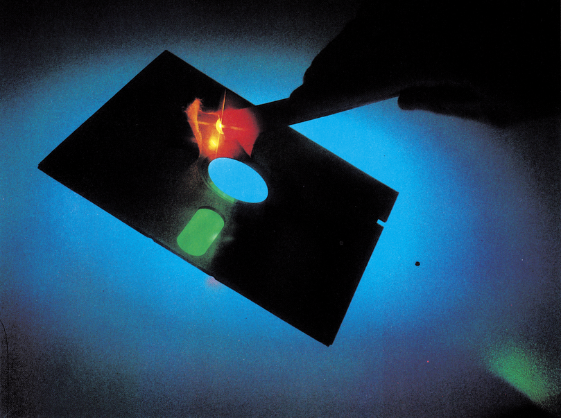

Abrakadabra
Wie Zauberei erscheinen die Fähigkeiten des »Disc-Wizard«! Sei es nun der umfangreiche Diskettenmonitor, die Directory-Sortierfunktion oder die Möglichkeit, gelöschte Disketten wieder zu regenerieren: Ein echtes »Listing des Monats«.

Es gibt wohl kaum einen fortgeschrittenen C 64-Fan, der auf einen Diskettenmonitor verzichten kann. Sei es nun, um das Directory zu editieren, oder schnell mal die ID oder den Namen der Diskette zu ändern… Ein komfortabler Diskettenmonitor gehört einfach zum Ärbeitswerkzeug eines Profis. Aber selbstverständlich kann ein normaler Diskmonitor nicht Listing des Monats werden; dazu muß er schon noch ein bißchen mehr können. Der »Disc-Wizard« hat so viele außergewöhnliche Funktionen, daß er eigentlich gar nicht mehr als »Monitor«, sondern eher als »Disketten-Utility« bezeichnet werden muß. So ganz nebenbei lassen sich mit diesem Programm die einzelnen Programmnamen des Directories sortieren; man kann in das Inhaltsverzeichnis Trennstriche einfügen, eventuell mit einem kleinen Kommentar versehen, und so zur Übersichtlichkeit beitragen. Nebenbei bemerkt: Wir erstellen unsere Programmservice-Disketten mit Hilfe dieser Funktion. Weiterhin besteht die Möglichkeit, auf einer Diskette nach verschlüsselten Texten zu suchen (zum Beispiel in einem Adventure).
Als Sensation jedoch kann man einen Menüpunkt bezeichnen, der auf den geheimnisvollen Namen »Deformat« hört. Angenommen, man hat in einem Anflug geistiger Umnachtung eine, wie sich natürlich danach herausstellt, falsche Diskette formatiert. Falls man dies mit ID tat, so bleibt nichts weiter zu tun, als sein Testament aufzusetzen und sich von dieser grausamen Erde zu verabschieden. Wenn jedoch kurz, also ohne ID formatiert wurde, braucht man nicht vollständig zu verzweifeln: Man lädt den Disc-Wizard in seinen C 64 und startet den »Deformator«. Dieser durchsucht die Diskette nach zusammenhängenden Blöcken (also Programmfiles) und trägt sie zusammen mit einem Pseudonamen in ein neues Directory ein. Danach kann man File für File laden und ihnen wieder ihre alten Namen geben.
Der in den Disc-Wizard eingebaute Diskettenmonitor hat alle Funktionen, die einen guten Monitor auszeichnen: Laden des nächsten vorhergehenden Blocks im bezug auf den gerade editierten; Anzeige von Track und Sektor des aktuellen Blocks; Hexdump des aktuellen Blocks auf Bildschirm oder Drucker.
(H.-J. Rottkemper/tr)Als stolzer Floppy-Besitzer und C 64-Fan haben Sie sich sicherlich schon seit längerem ein gutes Disketten-Utility gewünscht. Je mehr außergewöhnliche Funktionen dieses Werkzeug besitzt, desto besser. Der Disc-Wizard wird Sie begeistern!
Zuerst einmal sei betont, daß Sie zur Verwendung dieses Listings eine Commodore-Floppy 1541 (nicht 1570/1571!) besitzen müssen. Mit einer Datasette ist das Programm sinnlos. Noch eine Warnung: Zum Austesten der einzelnen Funktionen des Disc-Wizard und zum »Warmarbeiten« sollten Sie unbedingt eine Diskette mit unwichtigem Inhalt nehmen. Denn mit dem Diskettenmonitor könnten Sie unter Umständen Blöcke mit wichtigen Daten rettungslos zerstören!
Doch nun zu den Abtipphinweisen: Das Originalprogramm belegt auf der Diskette 42 Blöcke. Wir haben es mit dem »Flexible Code Compactor« aus dem 64’er Sonderheft 5/85 »gepackt«, um Ihnen unnötige Zeit beim Abtippen zu ersparen. In der hier abgedruckten, gepackten Version (siehe Listing) benötigt das Programm 34 Blöcke. Wenn Sie es mit dem MSE vollständig eingegeben haben, speichern Sie es erst einmal auf Diskette. Dann sollten Sie den Disc-Wizard laden und mit »RUN« starten. Der Bildschirmrahmen wird dunkelblau, ein Zeichen dafür, daß die Entpackroutine arbeitet. Nach ein paar Sekunden bekommt der Bildschirm wieder seine normale Farbe und der C 64 meldet sich mit »READY«. Im Speicher steht jetzt die endgültige Arbeitsversion des Disc-Wizard, die Sie wie ein normales Basic-Programm auf Diskette sichern sollten. Bei Bedarf laden Sie dann diese 41-Block-Version.
Nach dem Start mit »RUN« hören Sie einen Signalton, und der Disc-Wizard meldet sich mit dem Hauptmenü (falls Sie zu diesem Zeitpunkt die Floppy nicht eingeschaltet haben sollten, so erscheint die Meldung »No Connection with Floppy« und das Programm wartet darauf, daß Sie Ihr Laufwerk einschalten und dies durch einen Tastendruck bestätigen). Vor dem Menüpunkt »Directory« sehen Sie ein reverses Kästchen mit einem kontinuierlich durchlaufenden Strich. Dies ist Ihr »Cursor« zur Anwahl der einzelnen Funktionen. Mit »CRSR-Down« bewegen Sie die Markierung nach unten und mit »CRSR-Up« oder »CRSR-Right« nach oben.
Das Hauptmenü besteht aus zwei »Bildschirmfenstern«, zwischen denen Sie mit »F7«, »F5« oder der Space-Taste (ganz nach Belieben) hin- und herschalten können. Ein Druck auf die »RETURN«-Taste startet die gewählte Funktion. Im unteren Bildschirmbereich wird ständig der Fehlerkanal der Floppy angezeigt (»Status:«). Folgende Menüpunkte stehen zur Auswahl:
DIRECTORY
Funktion: Einlesen des Disketteninhaltes der gerade im Laufwerk befindlichen Diskette.
Hinweis: Die Anzeige kann jederzeit durch eine beliebige Taste angehalten und mit einem weiteren Tastendruck fortgesetzt werden. Durch »RUN/STOP« wird die Anzeige vorzeitig verlassen. Ist das Directory-Ende erreicht, so genügt ein Tastendruck, um in das Menü zurückzukehren.
NAME/ID
Der Name und die (5stellige) ID der Diskette können geändert werden. Auf dem Bildschirm erscheint nun die Aufforderung »INSERT DISC«, es soll also die zu verändernde Diskette eingelegt werden. Ist dies geschehen, so kann mit einem Tastendruck fortgefahren werden.
NAME
Funktion: Hiermit kann der Diskettenname einer Diskette ohne Datenverlust durch ansonsten nötige Formatierung geändert werden.
Hinweis: Hinter »OLD NAME« erscheint der bisherige Name der Diskette, wobei Steuercodes im Hochkomma-Modus angezeigt werden. Damit sind maskenzerstörende Steuerzeichen gemeint. Die Codes für »RETURN« und »SHIFT/RETURN« werden als reverse »T«, Steuerzeichen wie »INST« und »DEL« als »reverser Pfeil nach links« dargestellt. Unter der Bemerkung »NEW NAME« kann nun ein neuer Disketten-Name eingegeben werden, wobei alle Steuerzeichen außer »RETURN«, »SHIFT/RETURN«, »DEL« und »INST« übernommen werden können, falls vorher kein »"« eingegeben wurde. Die Bestätigung findet durch »RETURN« statt. Ist das Eingabefeld leer, wird der alte Name übernommen. Die maximale Länge des Namens beträgt 16 Zeichen, wobei ein zu langer Name automatisch gekürzt wird.
Funktionsweise:
In Spur 18, Sektor 0 der sogenannten BAM (Block Availability Map), ist unter anderem von Byte 144 bis 161 der Diskettenname eingetragen. Bei einem Disk-Namen, der kürzer ist als 16 Zeichen, wird er automatisch mit $A0 ( = 160) als Endkennung aufgefüllt. Das Programm macht nun nichts anderes, als eben jene Namen-Bytes mit dem neuen Namen zu überschreiben.
ID
Funktion: Ändern der ID einer Diskette ohne Formatierung Hinweis: Für die Anzeige gelten dieselben Bedingungen wie unter »NAME« angegeben. Die maximale ID-Länge beträgt 5 Zeichen. Auch hier wird die alte ID bei einem leeren Eingabefeld übernommen. »RETURN« qieat wiederum als Bestätigung.
Funktionsweise:
Änderung der Bytes 162 bis 166 in der BAM (Block 18,0)
LOCK
Funktion: Schutz einer Diskette vor unbeabsichtigtem »Scratchen«, Formatieren ohne ID-Angabe (= Löschen des Directory) oder der Veränderung des Disketteninhalts durch Block-Write-Befehle.
Hinweis: Versucht man, auf eine solche Diskette wie oben aufgeführt zuzugreifen, so erscheint ein »73, CBM DOS V2.6 154h-Fehler.
Funktionsweise: In Block 18,0 steht an dritter Position normalerweise ein »2A« als Formatkennzeichen für die Floppy 1541. So ist die 1541 zwar in der Lage, die Formate bestimmter anderer Commodore-Floppies zu lesen, jedoch nicht zu beschreiben. Verändert man dieses Formatkennzeichen, so unterliegt die Floppy dem Irrtum, sie hätte ein unbeschreibbares Fremdformat vor sich.
UNLOCK
Funktion: Entfernen des oben beschriebenen Disketten-Schutzes.
Funktionsweise: Da ein Schreibzugriff auf den Block 18,0 nicht möglich ist, muß das Zurückschreiben des Formatkennzeichens im Floppyspeicher selbst geschehen. Dazu wird erst ein Block mittels eines Block-Read-Befehls in den Floppy-Speicher ab $0300 gelesen. Daraufhin wird anstelle des »falschen« Bytes das reguläre direkt in den Floppyspeicher geschrieben (Memory-Write-Befehl). Dann wird der Block mit einem Block-Write-Befehl wieder auf die Diskette gebracht.
Zuletzt muß die Floppy noch neu intialisiert werden, um die intern gespeicherten Parameter wieder auf den neuesten Stand zu bringen.
MENUE
Funktion: Rückkehr in das Hauptmenü.
COMMAND
Funktion: Senden eines Floppy-Befehls ohne umständliche OPEN- und CLOSE-Befehle.
Beispiel: »r: a = b«
Die dem Befehl folgende Fehlermeldung der Floppy wird unter »Status« angezeigt. Als Bestätigung wird »RETURN« gedrückt.
Funktionsweise:
Senden des Kommandos über den Befehlskanal.
DEFORMAT
Funktion: Wiederherstellung eines Directory, nachdem ohne ID formatiert wurde.
Hinweis: Zuerst muß die Mindest-Block-Anzahl eingegeben werden (1 bis 255), ab derdas File in das Directory eingetragen wird. Bei nur einem Block ist ein Fehleintrag möglich, da es keinen weiteren Zeiger auf diesen Block gibt. Wird nur »RETURN« gedrückt, so erfolgt ein Rücksprung in das Hauptmenü. Im folgenden werden nun alle Blockzeiger (Anzeige: »READING POINTERS«) eingelesen, worauf sie analysiert werden und das neu generierte Directory auf die Diskette geschrieben wird (»Analyzing« beziehungsweise Creating Directory«). Zuletzt erfolgt ein »VALIDATE« der Diskette, um die Programmblöcke in der BAM als belegt zu kennzeichnen und den restlichen Disk-Speicherplatz zu bestimmen. Funktionsweise:
Beim kurzen Formatieren (ohne ID) wird nicht, wie häufig angenommen, die gesamte Diskette gelöscht, sondern nur die Directory-Blöcke (Spur 18).
Der Aufbau eines Programmeis auf der Diskette sieht wie folgt aus: Die erste Spur steht in dem Eintrag des Files in der Directory. Diese sucht sich die Floppy beim Laden zuerst heraus, worauf der erste Block geladen wird. In diesem ersten Block stehen wiederum Spur und Sektor des nachfolgenden Blockes. So hangelt sich die Floppy von Block zu Block, bis sie auf einen Block mit dem Spurzeiger 00 trifft, was für sie das Zeichen für den letzten Block eines Files ist.
Beim »Deformatieren« werden nun alle Zeiger der Blöcke eingelesen, um nach diesen 00-Zeigern zu suchen. Ist so ein Zeiger gefunden, so muß (aus den vorangegangenen Erklärungen folgernd) nach einem Block mit Zeigern auf diesen Block gesucht werden, worauf wieder nach einem Block gesucht wird, der auf diesen zeigt. Diese Prozedur wiederholt sich so lange, bis es keinen Block mit Zeigern auf den zuletzt gefundenen mehr gibt, womit der Anfangsblock gefunden wäre. Die Spur und den Sektor dieses Blockes schreibt man nun in das Directory, genauso wie die Länge (das Programm zählt die Blöcke beim Suchen mit) und den Filetyp »PRG« (kann nachher noch mit Manipulate geändert werden, ebenso wie der provisorische Name). An dieser Stelle sei nochmal darauf hingewiesen, das natürlich der alte Name des Programms nicht mehr wiedergeholt werden kann. Beim Deformatieren bekommen die Files daher Namen von »1« bis »144«. Dabei empfiehlt es sich, zuerst einmal alle wiederhergestellten Programme zu laden und ihnen erst später ihre originalen Namen zurückzugeben beziehungsweise nicht lauffähige Programme zu löschen.
MANIPULATE
Funktion: Dient zur Veränderung der File-Parameter im Directory hinsichtlich ihrer Länge, ihres Filetyps, Namens etc. Hinweis: Direkt nach der Anwahl wird das Directory eingelesen (»READING DIRECTORY«). Die Anwahl der zu verändernden Files geschieht durch die F5/F7-Tasten (Up/Down-Scrolling). Deren Parameter werden im rechten oberen Anzeigefeld ausgegeben. Als Hilfe sind auf die einzelnen Parameter Pfeile gerichtet, an deren Ende stichwortartig die Bedeutung erklärt wird:
| TRK/SE | Spur und Sektor des ersten Blockes |
| TPYE | Programmart |
| SEQ | sequentielle Datei |
| REL | relative Datei |
| PRG | Programm |
| USR | User-Datei |
| DEL | gelöscht (nicht gescratcht) |
| ??? | illegaler Filetyp |
| ——— | gescratchtes File (wird im normalen Directory nicht angezeigt) |
| LOCKED | Scratchschutz auf einem einzelnen File (»<« wenn vorhanden) |
| OPEN | Anzeige eines noch offenen Files (»*«) |
| NAME | Name des Files |
| LENGTH | Länge des Files |
NAME
Funktion: Änderung des Filenamens.
Hinweis: Bei der Eingabe sind auch alle Steuercodes erlaubt, soweit sie nicht der Eingabe-Steuerung dienen:
| RETURN | Bestätigung |
| SHIFT/RETURN | Bestätigung |
| DEL | Löschen des Eingabefeldes |
Ist das Eingabefeld leer, so bleibt nach »RETURN« der alte Name erhalten. Dadurch kann ein fälschliches Anwählen rückgängig gemacht werden.
Noch ein Hinweis:
Der Term »,8« oder »,8,1« kann dadurch angehängt werden, daß man zum Beispiel erst »PROGRAMM«, dann ein »SHIFT/ SPACE« und den Term »,8,1« eingibt. Das Ergebnis bei dem Einlesen des Directory sähe dann wie folgt aus:
»100 "PROGRAMM",8,1 PRG«
Dies funktioniert deshalb, weil hier ähnlich dem Disk-Namen ein $A0 ( = 160 = SHIFT/SPACE) als Endkennzeichen gedeutet wird. Daher werden alle nachfolgenden Buchstaben oder Steuercodes noch ausgegeben und interpretiert. Damit lassen sich also auch Farbsteuerzeichen und andere Codes zur »Verschönerung« einsetzen.
TYPE/RECOVER
Funktion:
Festlegung eines (neuen) File-Typs oder Wiederherstellen eines gescratchten Files.
Hinweis:
Die Anwahl der diversen File-Typen geschieht durch eine einfache Buchstabeneingabe: s = SEQ, p = PRG, d = DEL, u = USR, r = REL, ? = ???.
Da bei dem Scratchen eines Files nur die Typkennung eines Programmes (steht in der Directory) gelöscht wird und die Blöcke als frei in der BAM (Spur 18,0) gekennzeichnet werden, muß nur der Filetyp neu gesetzt und die BAM auf den neuesten Stand gebracht werden. Nach der Wiederherstellung eines Files sollte also unbedingt ein VALIDATE erfolgen!
Das Ganze funktioniert allerdings nur erfolgreich, wenn nach dem Scratchen kein neues Programm auf die Diskette übertragen wurde, da sonst die Blöcke des gescratchten File überschrieben worden sind.
Funktionsweise:
Der File-Typ eines Programms wird durch das Low-Nibble des File-Typ-Bytes definiert:
0000( = 0) = DEL,0001(=l) = SEQ,0010( = 2) = PRG,0011(=3) = USR, 0100(=4) = REL
Alle anderen denkbaren (illegalen) Möglichkeiten bestehen aus der Kombination der oben aufgeführten File-Typen, zum Beispiel: 0110, 0111, 0101, 1111, …
LENGTH
Funktion: Veränderung des Längeneintrages eines Files im Directory.
Hinweis: Hier kann die File-Länge eingetragen werden. Als Eingaben werden hierbei nur die Ziffern 0 bis 9, die »DEL«-Taste zum Löschen und »RETURN« als Bestätigung zugelassen. Zudem können nur bis maximal fünf Ziffern eingegeben werden.
Bei einer Leereingabe oder einer Eingabe einer Zahl größer 65535 bleibt die alte Länge bestehen (Schutz vor Falschauswahl). Ein Ausstieg des Programms ist durch eigene Syntax- und Größenkontrollen ausgeschlossen.
Funktionsweise:
Wie alle unter »MANIPULATE« veränderbaren Parameter steht auch die File-Länge in den Directory-Blöcken (Spur 18).
TRACK
Funktion: Änderung der Spur des ersten Blockes eines Programmes.
SECTOR
Funktion: Änderung des Sektors der ersten Spur eines Programms.
CLOSE
Funktion: Schließen noch geöffneter Files (zum Beispiel nach Fehlern während der Speicherung eines Programmes), um damit Daten zu retten.
Hinweis: Ein noch offenes File wird sowohl hier im Programm als auch bei der normalen Directory-Anzeige mit einem »*« vor dem Filetyp gekennzeichnet (zum Beispiel: »*PRG«). Nach dem Schließen sollte ein »VALIDATE« erfolgen, weil die Blöcke dee Programms noch als frei betrachtet und dadurch bei der nächsten Programmspeicherung überschrieben werden.
Funktionsweise: Ein offenes File ist durch ein nicht gesetztes Bit 7 im File-Typ-Byte gekennzeichnet. Ein Setzen schließt also ein offenes File.
(UN)LOCK
Funktion: Herstellen/Löschen eines Scratch-Schutzes für einzelne Files
Hinweis: Ein geschütztes File wird während der Directory-Anzeige durch ein »<« hinter dem File-Typ angezeigt (zum Beispiel »PRG<«). Dieser Schutz wirkt allerdings nicht bei Überschreiben mit dem »@«-Befehl. Ein bisher geschütztes File wird nach Anwahl wieder freigegeben.
Funktionsweise:
Ein gesetztes Bit 6 im Filetyp-Byte kennzeichnet ein geschütztes File. Das Programm setzt oder löscht nun dieses Bit entsprechend den Anforderungen.
SCRATCH
Funktion: Scratchen (Löschen) einzelner Files.
Bemerkung:
Da bei einem Scratchen in diesem Programm nur das File-Typ-Byte gelöscht und nicht wie beim direkten Scratchen die BAM neu installiert wird, muß nach dem Scratchen ein »VALIDATE« folgen. Ein gescratchtes File kann mit der Funktion »TYPE/RECOVER« wiederhergestellt werden.
Funktionsweise: Das File-Typ-Byte wird auf 0 gesetzt.
WRITE
Funktion: Schreiben des modifizierten Directory
Hinweis:
Ist Ihnen vorher bei den Eingaben ein schwerwiegender Fehler unterlaufen, so sind die Veränderungen vor Anwahl dieses Punktes noch nicht auf der Disk gespeichert.
Funktionsweise: Da das Directory beim Einlesen ab $A000 unter dem Basic-ROM zwischengespeichert ist, braucht dieser Inhalt nur noch mit Block-Write-Befehlen auf die Diskette übertragen zu werden.
READ
Funktion: Einlesen eines neu zu bearbeitenden Directory Hinweis: Ist bei der Veränderung der File-Parameter ein gravierender Fehler unterlaufen, und Sie wissen die Originalwerte nicht mehr, so kann hiermit das Directory neu eingelesen werden.
Funktionsweise:
Es werden der Reihe nach die Blöcke 18/1,18/4,18/7,18/10 etc. eingelesen und ab $A000 unter dem Basic-ROM abgelegt.
MENUE
Funktion: Rücksprung in das Hauptmenü.
Hinweis: Veränderungen am Directory werden nicht automatisch gespeichert!
DIR-SORTER
Funktion: Sortieren, Einfügen und Löschen von Files im Directory.
Hinweis: Direkt nach der Anwahl wird das Directory der sich gerade im Laufwerk befindlichen Diskette eingelesen. Im Anschluß werden alle gescratchten Files aus dem Directory entfernt und sind auch mit »MANIPULATE« nicht mehr wiederzuholen, wenn das bearbeitete Directory geschrieben worden ist (nur durch »DEFORMAT«), Die Cursor- und Auswahlsteuerung geschieht wie in »MANIPULATE« beschrieben.
INSERT
Funktion: Einfügen eines Trennstriches inmitten der Files-Einträge, um die Übersichtlichkeit zu erhöhen.
Hinweis: Die standardmäßige Trennzeile ist »———–« und wird im Ein-/Ausgabefeld in dem rechten oberen Viertel angezeigt. Eine Neudefinition des Striches ist mit der Funktion »DEF.LINE« möglich. Als File-Typ wird »DEL« ins Directory eingetragen; die Länge ist 0, und die Zeiger sind 18,0. Der Trennstrich wird dort eingetragen, wo im unteren Ausgabefenster die Hakenzeichen zwischen zwei Files zeigen.
POSITION
Funktion: Neupositionierung eines Files innerhalb des Directory (= Reihenfolgeänderung)
Hinweis: Der neu zu positionierende File-Eintragwird auf der Höhe des Hakenzeichens angezeigt. Daraufhin wird der Name in das Feld transferiert, in dem normalerweise der Trennstrich-Name steht. Während der Positionierung sind die Cursor-Tasten ausgeschaltet, es sind also nur die F5/F7-Tasten zum Suchen der neuen Position innerhalb des Directory zugelassen.
DELETE
Funktion: Vollständiges Löschen eines Eintrages aus dem Directory.
Hinweis: Nach dem Löschen sollte ein »VALIDATE« durchgeführt werden, um den verbleibenden Platz auf der Diskette richtigzustellen.
DEFINE LINE
Funktion: Neudefinition des Trennstriches.
READ
Funktion: Neueinlesen des Directory
WRITE
Funktion: Schreiben des modifizierten Directory
MENUE
Funktion: Rücksprung in das Hauptmenü
Hinweis: Directory wird nicht automatisch gespeichert!
MONITOR
Funktion: Veränderung/Analyse eines Blockinhaltes Hinweis: Die Zahlenbasis ist das Hexadezimalsystem. Alle Eingaben erfolgen im Direktmodus, wobei eine Falscheingabe mit einem»?«quittiert wird. Direkt nach der Anwahl dieses Punktes erscheint das Hilfsmenü mit der Auflistung aller Befehle. Der eingelesene Block wird im Computer-Block-Speicher (ab $c200) zwischengespeichert, bearbeitet und von dort geschrieben.
INPUT
Funktion: Einlesen eines Blockes in den Computer-Block-Speicher, um ihn anschließend zu bearbeiten.
Syntax: I ⟨spur⟩ (sektor⟩
Hinweis: ⟨spur⟩ und ⟨sektor⟩ sind zweistellige Hexadezimalzahlen, die die Spur und den Sektor des einzulesenden Blockes bestimmen. Die Parameter ⟨spur⟩ und ⟨sektor⟩ können weggelassen werden, wenn vorher bereits ein Block gelesen wurde. Dann wird automatisch derselbe Block gelesen.
OUTPUT
Funktion: Schreiben eines Blockes vom Computer-Block-Speicher auf Disk
Syntax: 0 ⟨spur⟩ ⟨sektor⟩
Hinweis: ⟨spur⟩ und ⟨sektor⟩ sind zweistellige Hexadezimalzahlen, die die Spur und den Sektor bestimmen, auf welchem der Block gespeichert werden soll. Die Parameter ⟨spur⟩ und ⟨sektor⟩ sind optional, das heißt bei ihrem Fehlen wird der Block automatisch auf die Spur und den Sektor zurückgeschrieben, von wo aus er gelesen wurde.
FILL
Funktion: Füllen des Computer-Block-Speichers mit einem beliebigen Wert
Syntax: F ⟨byte⟩
Hinweis: ⟨byte⟩ bezeichnet einen beliebigen Wert, mit dem der Speicher überschrieben werden soll. Dabei werden die ersten beiden Bytes (die Blockzeiger) von diesem Überschreiben verschont.
MEMORY DUMP
Funktion: Anzeige Inhalt des Computer-Block-Speichers
Syntax: M ⟨adresse⟩
Hinweis: Fehlt ⟨adresse⟩, so wird der gesamte Computer-Block-Speicher angezeigt. Ansonsten ist die Eingabe aller Hex-Zahlen erlaubt, deren Low-Nibble gleich Null ist (00,10, 20,…,E0,F0). Die Anzeige kann mit »CTRL«, »C = «oder»SHIFT« angehalten und mit »RUN/STOP« beendet werden. Auf der linken Seite kann man jeweils 8 Hex-Bytes lesen, deren ASCII-Darstellung man in gleicher Höhe auf der rechten Seite lesen kann. Masken- und Hochkomma-Modus zerstörende Steuercodes, wie »RETURN«, »SHIFT/RETURN« und so weiter, werden durch ».« dargestellt. Änderungen des Inhaltes werden im Direktmodus getätigt, das heißt, man führt den Cursor auf das zu ändernde Byte und schreibt einen neuen Wert an dessen Stelle.
EXIT
Rücksprung in das Hauptmenü.
Syntax: X
HELP
Funktion: Aufruf des Hilfsmenüs (Ausgabe aller Befehle) Syntax: H
RESET
Funktion: Neutralisation aller Veränderungen
Syntax: S
Hinweis: Der Block braucht nicht neu gelesen zu werden, da das Programm mit mehreren Puffern (Zwischenspeichern) arbeitet und im Bereich von $c600 bis $c700 der ursprüngliche Blockinhalt noch vorhanden ist.
EDITED BLOCK
Funktion: Anzeige der Spur und des Sektors des sich im Computer-Block-Speicher befindlichen Blockes
Syntax: B
STATUS
Funktion: Auslesen des Floppy-Fehlerkanals und Anzeige der Meldung.
Syntax: @
LAST BLOCK
Funktion: Einlesen des Blockes, der vor dem gerade im Speicher liegenden Block bearbeitet wurde.
Syntax: L
NEXT BLOCK
Funktion: Einlesen des Blockes, der durch die Blockzeiger des gerade bearbeiteten Sektors bestimmt wird.
Syntax: N
Hinweis: Diese Funktion dient hauptsächlich dazu, Programme auf der Diskette zu verfolgen. Ist kein weiterer Block vorhanden, so wird ein »?« ausgegeben.
TEXT
Funktion: Eingabe eines Textes
Syntax: T ⟨adresse⟩ "Text"
Hinweis: Der Parameter ⟨adresse⟩ bedeutet, ab dem wievielten Byte der Text eingefügt werden soll.
Texte, die über das Blockende hinüberreichen, werden entsprechend gekürzt.
ROTATE
Funktion: zyklisches Linksrotieren der Bits
Syntax: R ⟨anzahl⟩
Hinweis: ⟨anzahl⟩ ist ein Wert zwischen 00 und 07. Die Anwendung liegt in der (De-)Codierung von Texten oder Tabellen auf der Diskette: im Zusammenhang mit »FIND TEXT« lassen sich hiermit gefundene Texte decodieren und verändern. Funktionsweise:
Nehmen wir als Beispiel die Binärzahl 10101100
Diese wird nun einmal nach links rotiert: 01011001
Nochmals einmal nach links: 10110010
Wie man sehen kann, verschieben sich alle Bitsjeweils um eine Stelle nach links, wobei das ganz linke Bit sich ja nicht weiter nach links verschieben läßt. Deshalb wird es auf der rechten Seite wieder angehängt. Da bei dieser Methode kein Bit verlorengeht, kann man damit Daten und Texte verschlüsseln.
Wie man hierbei sehen kann, ist nach der achten Rotation der Ursprungszustand wieder hergestellt. Deshalb sind nur Rotationen von 1 bis 7 sinnvoll. Bei einer O-Rotation bleibt also die Bit-Reihenfolge und damit der Wert unverändert.
EOR
Funktion: Verknüpfung aller Bytes eines Blockes mit Entweder-Oder (EOR).
Syntax: E ⟨wert⟩
Hinweis: ⟨wert⟩ darf von 00 bis FF liegen. Es dient zur (De-) Codierung von Daten.
HEX-DEC
Funktion: Umrechnung einer Hexadezimal- in eine Dezimalzahl.
Syntax: $⟨zahl⟩
Hinweis: ⟨zahl⟩ ist eine zwei- oder vierstellige Hexadezimalzahl.
DEC-HEX
Funktion: Umrechnung einer Dezimal- in eine Hexadezimalzahl
Syntax: #⟨zahl⟩
Hinweis: Die maximale ⟨zahl⟩ ist 65535.
Die Umrechnung erfolgt zwar durch eine Betriebssytem-Routine, Eingabefehler werden aber vorher durch das Programm abgefangen.
Funktion: Ausgabe des Blockinhalts in dem Computer-Block-Speicher auf einen Drucker mit Geräteadresse 4
Syntax: P
Hinweis: Bei einem nicht angeschlossenen/angeschalteten Drucker erscheint die Fehlermeldung »NO CONNECTION WITH PRINTER«. ASCII-Werte von 0 bis 31 und 128 bis 160 werden als ».« ausgegeben, da sie auf vielen Druckern als Steuerzeichen Verwendung finden und somit den Ausdruck zerstören könnten.
CATALOG
Funktion: Ausgabe des Disketteninhaltes
Syntax: C
DISC COMMAND
Funktion: Senden eines Diskettenbefehls an die Floppy Syntax: *(befehl)
Hinweis: Mit (befehl) ist ein Befehlstext gemeint.
FIND TEXT
Funktion: Suchen nach (eventuell verschlüsselten) Texten auf der Diskette
Hinweis: Wenn ein Text gefunden wurde, so werden die Parameter ausgegeben: EOR-Wert, ROTATE-Wert, Spuren. Nach Druck der Leertaste wird weitergesucht, mit jeder anderen Taste kehrt man ins Hauptmenü zurück. Beim Suchen werden immer zwei Blöcke gleichzeitig eingelesen, um auch sektorübergreifende Texte zu finden.
1. WATCH TRACK(S)
Funktion: Suchen nach Texten auf ganzen Spuren
1.1 FIND TEXT
Funktion: Eingabe des Textes, nach welchem gesucht werden soll.
Hinweis: Bei einer Leereingabe erfolgt der Rücksprung in das Hauptmenü.
1.2 START TRACK
Funktion: Eingabe der ersten Spur, ab welcher gesucht werden soll.
Hinweis: Es sind nur Werte von 0 bis 35 zugelassen.
1.3 END TRACK
Funktion: Eingabe der letzten Spur, bis welcher einschließlich gesucht wird.
Hinweis: Zugelassene Werte 0-35. Weiterhin muß der END TRACK größer gleich START TRACK sein.
1.4 EOR-CODE
Funktion: Eingabe des EOR-Wertes für die Decodierfunktion Hinweis: Bei einem Wert gleich 0 wird nach unverschlüsselten Texten gesucht.
1.5 ROTATE-CODE
Funktion: Eingabe der Häufigkeit, mit welcher die Bits rotiert werden sollen.
Hinweis: Bei der Eingabe sind Werte von 00 bis 07 zugelassen. Bei einem Rotationswert von 0 wird nach unverschlüsselten Texten gesucht.
1.6 EOR-ROTATE
Funktion: Reihenfolge der Qecodierung (erst EOR und dann ROTATE, oder umgekehrt).
Hinweis: Die Antwort kann mit den Cursortasten auf »y« oder »n« eingestellt werden. Bei »y« erfolgt erst die EOR-Decodierung, dann die Rotate-Decodierung, bei »n« entsprechend die umgekehrte Reihenfolge.
1.7 CONTINUOUSLY
Funktion: Anwendung von Punkt 1.4 bis 1.6 in allen Kombinationen
Hinweis: Um die Vergleiche zu beschleunigen (2 Millionen Vergleiche pro Block) sind der Interrupt und der Bildschirm abgeschaltet. Zur Kontrolle werden aber in einem bestimmten Zyklus die Bildschirmfarben umgesetzt. Die Dauer für einen Block beträgt ungefähr 8 bis 10 Minuten. Bei der Endabfrage »ARE YOU SURE« kann wiederum mit den Cursortasten zwischen »YES« und »NO« entschieden werden, worauf RETURN als Bestätigung folgen muß.
2.FOLLOWPOINTERS
Funktion: Blockverfolgung entsprechend den Blockzeigern
Hinweis: In der Regel wird diese Find-Unterroutine dafür verwandt, ein bestimmtes Programm auf der Diskette zu untersuchen. Dafür muß erst im Unterprogramm »MANIPULATE« die Startspur und der Startsektor des zu untersuchenden Programms ermittelt werden.
2.1 FIND TEXT bis 2.2 START TRACK
Funktion: siehe 1.1 bis 1.2
2.3 START SECTOR
Funktion: Eingabe des Startsektors der oben angegebenen Startspur
2.4 EOR-CODE bis 2.7 CONTINUOUSLY
Funktion: siehe 1.4 bis 1.7
3. WATCH TWO SECTORS
Funktion: Suche nach Text in nur zwei zusammenhängenden Blöcken
4. Menü
Funktion: Rücksprung in das Hauptmenü
EXIT
Funktion: Verlassen des Programms
Hinweis: Das Programm kann nach dem Verlassen wieder mit »RUN« gestartet werden.